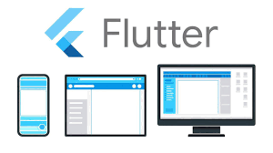
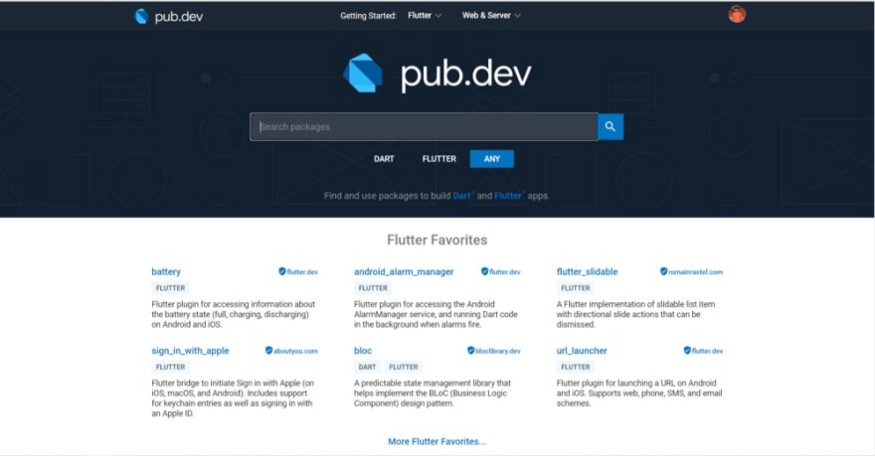
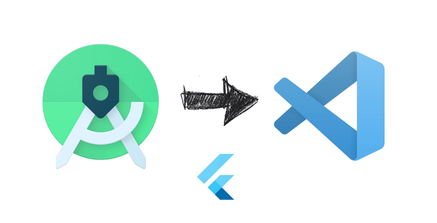
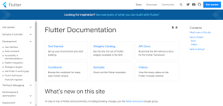
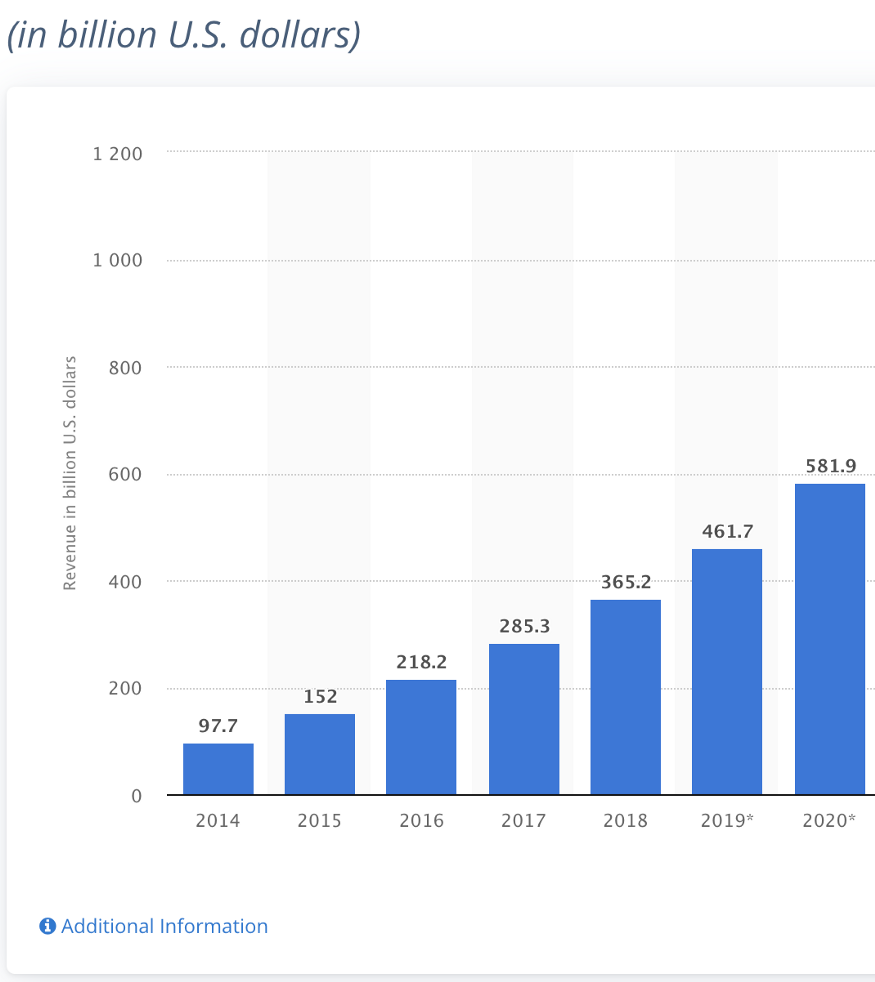

First of all let’s introduce you to flutter because most of the people around me keep wondering what is
the main difference between Flutter and Dart, so if you have this confusion I would definitely say that
you have come to the right place. If you have any doubts regarding whether to start app development
using Flutter or not you are at the right place. So without giving your eyes extra pain lets start.
Why Flutter is So Special?
25 July, Number of Words - 1276, 6 min Read
|

|
Introduction-:
Let’s start with the keypoint i.e. “Flutter vs Dart” , so in short Flutter is the Software Development
Kit that is used for making the cross-platform apps and Dart is the programming language that is used to
code these apps, in easier words Flutter is just like the tools which we use for the construction of the
house and the material which we use can be somewhat compared to Dart.
Now coming to the real official definition of Flutter and Dart , So Flutter is Google’s UI toolkit for building beautiful, natively compiled applications for mobile, web, desktop and embedded devices from a single codebase. Now Dart is a programming language designed for client development, such as for the web and mobile apps. It is developed by Google and can also be used to build server and desktop applications. Dart is an object-oriented,class-based, garbage-collected language with C-style syntax.
Well, now we have it. And I want to share the joy of working on Flutter with you, so that you make the most benefit of the innovation. In this article, I highlight my thoughts on what advantages of Flutter are going to make it dominate cross-platform application development in the upcoming years.
Now coming to the real official definition of Flutter and Dart , So Flutter is Google’s UI toolkit for building beautiful, natively compiled applications for mobile, web, desktop and embedded devices from a single codebase. Now Dart is a programming language designed for client development, such as for the web and mobile apps. It is developed by Google and can also be used to build server and desktop applications. Dart is an object-oriented,class-based, garbage-collected language with C-style syntax.
Well, now we have it. And I want to share the joy of working on Flutter with you, so that you make the most benefit of the innovation. In this article, I highlight my thoughts on what advantages of Flutter are going to make it dominate cross-platform application development in the upcoming years.

Details-:
• Pros of using Flutter-:
1. Cross-Platform support -: The biggest advantage of using
Flutter for the purpose of app development is
that you no longer need to know 3–4 languages for the purpose of setting up your app and web app.
Since Flutter is cross-platform ,therefore we can code a single code snippet according to the need and
that is it, we can use the same code to run ios apps, android apps and web apps also.
In brief, sharing the UI and business logic, which is possible with Flutter, saves time, effort and the
health of the developer while not affecting the performance of the end product.

2. Code development time got reduced-: Flutter’s “hot reload”
feature, in turn, allows seeing the applied changes almost instantly, without even losing the current
application state. And this is exactly what makes Flutter app development several times faster due to the
increased development speed.
Besides, the Flutter team has put lots of effort into providing a wide variety of ready-to-use widgets. Most of them are incredibly customizable, saving your time like no other framework before. In addition to numerous core layout widgets, Flutter provides a large set of Material and Cupertino widgets that perfectly mimic the behavior of each design language.
Besides, the Flutter team has put lots of effort into providing a wide variety of ready-to-use widgets. Most of them are incredibly customizable, saving your time like no other framework before. In addition to numerous core layout widgets, Flutter provides a large set of Material and Cupertino widgets that perfectly mimic the behavior of each design language.
3. Libraries and Packages that Dart provides-: If someone needs
to implement some extra features in the app then he/she does not want to waste his/her time writing the full
code again and again there are thousands of packages that are available on
https://pub.dev/ where you can search for the package you want to embed in your code.
All we need to do is just a little research to find the appropriate package name and that can easily be done
using stackoverflow and other informative resources.

4. Works easily on both Android Studio and VS Code-: While most
of us prefer coding on VS Code instead of any other compiler but most of the flutter engineers prefer
Android Studio due to the next level features that it provides such as AVD Manager,Instant App Run,help to
Build Up App using intellij-code for All Devices and also helps to Connect with Firebase but apart from all
of this Android Studio is a very heavy software which is ultimately going to heat up your device if its not
having enough RAM and SSDs so many of the developers face problems but there is no need to worry as setting
up flutter on VS Code is also possible just using few extensions. (P.S.-: You can also refer to a youtube
tutorial if you want to)

5. Documentation-: Keeping the best part for the last ,the
biggest advantage of using flutter is its documentation. All of the flutter widgets used in the code are
very well documented and you may find it very easily on its official website. Easy documentation helps you a
lot to go through the errors and the use of any widget in flutter.

• Cons of using Flutter-:
So now after so many advantages of flutter let’s look at the other side of the coin,also all the cons listed
below are according to me which obviously means that it depends on user to user. But while using flutter i
faced the following drawbacks-:
1. Small Community-:Although flutter is growing at a very fast
pace but still it has a smaller community in comparison to the community of other coding languages used for
app development i.e. Java, Kotlin, Swift.
So lets say if you have a doubt/error that is very much conceptual/uncommon there is a slight possibility that you may find it difficult to find the solution.
So lets say if you have a doubt/error that is very much conceptual/uncommon there is a slight possibility that you may find it difficult to find the solution.
2. Developing Stage-:Although we can see this as an advantage
that flutter is developing continuously but sometimes it feels annoying to work with flutter due to its
regular updation. Let’s assume you are working on a project and taking help from a tutorial so even if the
tutorial is just six months old but it can easily happen that flutter got updated and now the widget is
known by other name or may be the widget shown in the video is deprecated (P.S. It happens only sometimes)
all of this breaks the continuity of the project we are working on because we need to search what is the
newly updated name by reading all of the documentation.
3. Clashing of dependencies-:We import packages in flutter
through passing of the installation command in pubspec.yaml file but it may happen sometimes that two
different libraries may not be ready to share their latest versions together as one or the other hasn’t been
updated after it was coded by the authors. So we need to change the versions accordingly.
•Conclusion from my side-:
Time being it may doubt many of you that whether we should start with flutter or not but according to my
recommendation with the time passing and the growth rates flutter is the future of app development as it is
way more crisp then all the other languages and easy to learn and also due to its continuous development.
P.S. If you are very much interested in app development dont just remain limited to flutter, open up to kotlin,java and swift also because it will increase the possibility of you getting to know app development from depth.
So according to me at the end just hold your laptop and make a coffee and start coding for 45 days or so continuously on flutter and you will definitely learn to code flutter to the mark of what is really required to build basic to medium level applications.
Hope I was able to give you a brief idea about what flutter is and why it is growing so fast and what are the expectations which we can have with flutter in the upcoming years and also the main point whether we should start flutter or not.
P.S. If you are very much interested in app development dont just remain limited to flutter, open up to kotlin,java and swift also because it will increase the possibility of you getting to know app development from depth.

So according to me at the end just hold your laptop and make a coffee and start coding for 45 days or so continuously on flutter and you will definitely learn to code flutter to the mark of what is really required to build basic to medium level applications.
Hope I was able to give you a brief idea about what flutter is and why it is growing so fast and what are the expectations which we can have with flutter in the upcoming years and also the main point whether we should start flutter or not.